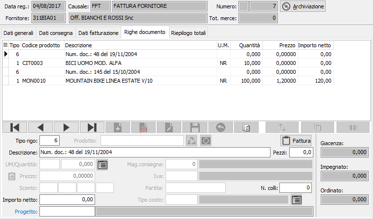
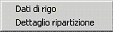
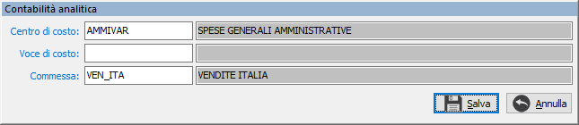
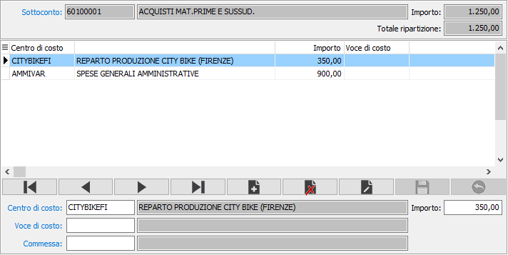
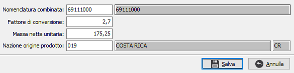

Righe documento
In questa finestra video è possibile inserire i vari righi della fattura.
È possibile inserire righi relativi ad articoli codificati, ad articoli
non presenti in magazzino, ad omaggi di varia natura e descrittivi. Non
tutti i campi visualizzati nell’illustrazione seguente sono necessariamente
presenti nell’installazione attiva presso l’utente: ad esempio, se l’utente
non gestisce più magazzini o depositi, non viene visualizzato il campo
Magazzino di spedizione e così via.
La maschera video è articolata su due sezioni: la sezione inferiore
visualizza il pannello di input mentre la griglia della sezione superiore
visualizza le righe inserite.

TIPO RIGO: codice
numerico presente sulla tabella dei tipi rigo utilizzato per definire
il tipo di rigo che si vuole inserire. Se la fattura evade gli ordini
è possibile richiamare la finestra di selezione degli ordini tramite il
tasto F12. Se la fattura evade i D.D.T. è possibile richiamare la
finestra di selezione dei D.D.T. tramite il tasto F11. Se la fattura evade
gli interventi è possibile richiamare la finestra di selezione degli interventi
tramite il tasto CTRL+F11. Sul campo sono attive le funzioni di ricerca
(F9).
PRODOTTO: campo alfanumerico
per inserire il codice dell’articolo che si intende utilizzare. Il campo
è attivo solo per i tipi di rigo che prevedono l'accesso al prodotto.
Sul campo sono attive le funzioni di ricerca (F9) ed accesso rapido alla
tabella (CTRL+W). Tramite il tasto funzione F11 si può accedere alla
finestra relativa alla Selezione
descrizioni prodotti.
DESCRIZIONE: campo
alfanumerico di 60 caratteri per descrivere il prodotto. In caso di articoli
codificati, il campo viene compilato automaticamente con la descrizione
dell’articolo in esame, che è tuttavia modificabile a cura dell’utente.
In caso di tipo rigo che preveda di trattare voci
di recupero spese sul campo è attiva la ricerca sulla tabella apposita;
nel caso di tipo rigo che identifichi righe descrittive, sul campo è attiva
la ricerca sulla tabella dei Testi fissi
documenti, che consente di acquisire testi precedentemente inseriti
ed assegnati ad un codice.
NOTE FATTURA: bottone
che abilita un campo annotazioni, relative al rigo di documento attivo,
che verranno stampate sulla fattura. Nel caso la causale lo preveda (casella
stampa descrizione estesa con segno di spunta) ed il prodotto abbia una
descrizione estesa dichiarata non fissa (casella fissa in anagrafica articoli
non spuntata), questa viene automaticamente riportata in questo campo.
LUNGHEZZA: campo visualizzato
solo se in configurazione è attiva la gestione delle misure. Consente
di impostare la prima misura (lunghezza) per il calcolo della quantità.
LARGHEZZA: campo visualizzato
solo se in configurazione è attiva la gestione delle misure. Consente
di impostare la seconda misura (larghezza) per il calcolo della quantità.
ALTEZZA: campo visualizzato
solo se in configurazione è attiva la gestione delle misure. Consente
di impostare la terza misura (altezza) per il calcolo della quantità.
PEZZI: campo numerico
che indica la seconda quantità del documento, se attivato da configurazione.
Se attiva la gestione delle misure, il valore del campo viene utilizzato
per calcolare la quantità principale.
UNITÀ DI MISURA: campo
alfanumerico di 3 caratteri, presente nella tabella Unità di misura, per
descrivere l’unità di misura del prodotto. Per gli articoli codificati
viene presentata automaticamente la prima unità di misura presente in
anagrafica. L’unità di misura può essere modificata dall’utente, ma per
gli articoli codificati vengono accettati solo i codici delle unità di
misura presenti in anagrafica articolo. Sul campo sono attive le funzioni
di ricerca (F9) ed accesso rapido alla tabella (CTRL+W). Tramite il tasto
funzione F11 si può accedere alla finestra relativa al fattore
di conversione. Tramite il tasto funzione F12 si può accedere
alla finestra relativa alla selezione
di una unità di misura con conversione della quantità; tramite i tasti
CTRL+F12 si può accedere alla finestra relativa alla conversione
di una unità di misura all'unità di misura del documento.
QUANTITÀ: campo numerico
per inserire la quantità per l'articolo attivo. Se attiva la gestione
del dettaglio quantità per questo documento, è presente il bottone dettaglio,
a destra del campo, tramite il quale sarà visualizzata la relativa finestra
di dettaglio
quantità; l'attivazione della finestra avviene comunque in automatico
al momento dell'accesso al campo quantità.
PREZZO: campo numerico
per inserire il prezzo. Per gli articoli codificati viene presentato,
nell’ordine, il prezzo dell'eventuale contratto associato al fornitore
o alla zona o all'attività, oppure il prezzo presente nell'eventuale listino
speciale, oppure il prezzo del listino prodotti memorizzato sul documento,
oppure il prezzo presente in anagrafica articolo. Il prezzo proposto può
essere modificato dall’utente. Sul campo agisce la funzione F11 che abilita
la vista sugli ultimi prezzi praticati al fornitore attivo relativamente
al prodotto indicato, per consentirne l’eventuale acquisizione. La vista
non viene abilitata se non esistono prezzi relativi all’articolo in esame.
Non è invece consentita l’acquisizione del prezzo se l’articolo attivo
è presente e valido nell’eventuale listino del fornitore. E' presente
anche la funzione F12 che consente di ripristinare il prezzo originale
dell'articolo; la funzione CTRL+F11 che visualizza una finestra di informazioni
economiche relative al prodotto (provenienza dei prezzi, sconti ecc.).
Inoltre, per le righe di tipo servizio/recupero spese, con la funzione
CTRL+F12 è possibile richiamare una maschera per assegnare delle spese
in percentuale al valore delle righe inserite fino a quel momento.
SCONTI O MAGGIORAZIONI:
campi, abilitati o meno in relazione al numero sconti previsto in configurazione,
per inserire una percentuale di sconto o maggiorazione. Se esistenti,
vengono proposte le percentuali di sconto esistenti in anagrafica fornitori,
in anagrafica articoli o in listini fornitori. A conferma dell’ultimo
sconto, viene visualizzato l’importo netto di rigo.
MAGAZZINO DI CONSEGNA:
codice del magazzino aziendale in cui deve essere consegnata la merce.
Viene proposto il magazzino presente in configurazione. Sul campo sono
attive le funzioni di ricerca (F9) ed accesso rapido alla tabella (CTRL+W).
CODICE IVA: codice
I.V.A. memorizzato sull'articolo. Se la fattura prevede l’esenzione Iva,
viene proposto il codice di esenzione stesso. Sul campo sono attive le
funzioni di ricerca (F9) ed accesso rapido alla tabella (CTRL+W).
PARTITA: campo abilitato
solo in caso di attivazione della gestione Partite, per inserire il numero
della partita a cui appartiene l'articolo.
Versione Enterprise:
TIPO COSTO: codice
del tipo costo memorizzato sull'articolo. Consente la corretta contabilizzazione
del costo generato dal rigo di fattura. Sul campo sono attive le funzioni
di ricerca (F9) ed accesso rapido alla tabella (CTRL+W).
Altre versioni:
CONTO DI COSTO: codice
del sottoconto memorizzato sull'articolo. Utilizzato per la contabilizzazione
del costo generato dal rigo di fattura. Sul campo sono attive le funzioni
di ricerca (F9) ed accesso rapido alla tabella (CTRL+W).

 Il
pulsante, presente se attiva la gestione delle date di competenza di rigo,
consente di accedere alla finestra dove indicare il periodo di competenza;
vengono utilizzati come periodo di competenza dei movimenti di rettifica
creati dal programma di “Fatture da emettere/ricevere”.
Il
pulsante, presente se attiva la gestione delle date di competenza di rigo,
consente di accedere alla finestra dove indicare il periodo di competenza;
vengono utilizzati come periodo di competenza dei movimenti di rettifica
creati dal programma di “Fatture da emettere/ricevere”.
 Il pulsante
consente di accedere, se attivo il modulo di contabilità analitica, alla
sezione dove indicare il centro di costo, la voce di costo e la commessa,
in base a quanto indicato in configurazione
contabilità analitica.
Il pulsante
consente di accedere, se attivo il modulo di contabilità analitica, alla
sezione dove indicare il centro di costo, la voce di costo e la commessa,
in base a quanto indicato in configurazione
contabilità analitica.

Attivando
l’opzione "Dettagli centri di costo/ricavo su fatture" presente
nella configurazione “Contabilità analitica” si dà la possibilità di gestire
più centri di costi/ricavo per rigo documento. Alla pressione del tasto
“Analitica” presente sul rigo del documento viene visualizzato un menù
tramite il quale è possibile selezionare che tipo di gestione adottare
per il rigo corrente (per default continua a funzionare con il meccanismo
di un elemento per ogni rigo fattura); se viene scelto “Dettaglio ripartizione”
si apre una finestra in cui è possibile inserire la ripartizione del rigo
di fattura su più centri di costo/ricavo.

La finestra standard consente l'inserimento degli elementi configurati
per il modulo di contabilità analitica. |

La finestra di dettaglio consente l'inserimento degli elementi
configurati per il modulo di contabilità analitica, consentendo
la ripartizione su più centri di costo/ricavo; se il sottoconto
ha impostato una ripartizione automatica la finestra si apre già
con i dati già ripartiti; se il sottoconto ha una ripartizione
manuale ed è presente una ripartizione viene effettuata la richiesta
per la generazione delle righe. Se viene variato il valore del
rigo e si accede alla finestra dove il conto di costo/ricavo ha
una ripartizione automatica viene richiesto se aggiornare gli
importi in automatico. Non sarà possibile uscire dalla finestra
se gli importi delle ripartizioni e l'importo del rigo non quadrano. |
In fase di contabilizzazione fattura viene
utilizzato il dettaglio del rigo (ovviamente se compilato).
CODICE PROGETTO: Codice
alfanumerico di 15 caratteri che definisce il progetto di riferimento.
Sul campo sono attive le funzioni di ricerca (F9) ed accesso diretto alla
tabella (CTRL+W). Il campo è presente solo se attiva la gestione progetti
e configurato il progetto sul rigo.
Nella finestra video è possibile scorrere i righi di documento, visualizzando
quello attivo nel pannello di input, tramite i tasti CTRL+freccia
giù e CTRL+freccia su.
Un rigo di documento visualizzato nel pannello di input può essere eliminato,
ancorchè privo di trattamenti successivi, premendo il bottone Elimina
della barra strumenti del pannello di input; è possibile inserire un rigo
vuoto immediatamente successivo al rigo attivo premendo il bottone Nuovo
della barra strumenti del pannello di input.
Se presente il modulo BoxFatture passivo,
utilizzato tramite l'applicazione OS1BoxFatture, sarà presente il pulsante
 ed in fase di inserimento sarà possibile l'acquisizione
delle fatture di acquisto; il pulsante è attivo nel caso in cui non
si sia selezionata la fattura di acquisto da acquisire sulla pagina dei
dati generali, ma si vogliano collegare le singole righe del documento,
ad esempio in caso di evasione Ddt di acquisto.
ed in fase di inserimento sarà possibile l'acquisizione
delle fatture di acquisto; il pulsante è attivo nel caso in cui non
si sia selezionata la fattura di acquisto da acquisire sulla pagina dei
dati generali, ma si vogliano collegare le singole righe del documento,
ad esempio in caso di evasione Ddt di acquisto.
 Tramite il pulsante Ordina è possibile modificare
l'ordinamento delle righe del documento spostandole singolarmente tramite
gli appositi tasti di scorrimento oppure selezionando e trascinando le
singole righe. La pressione sul pulsante Salva determina la modifica effettiva
dell'ordinamento.
Tramite il pulsante Ordina è possibile modificare
l'ordinamento delle righe del documento spostandole singolarmente tramite
gli appositi tasti di scorrimento oppure selezionando e trascinando le
singole righe. La pressione sul pulsante Salva determina la modifica effettiva
dell'ordinamento.

 Tramite il pulsante Copia è possibile inserire nel
documento righe estratte da altri documenti, uguali o di altro tipo, i
parametri vengono proposti in base alla Configurazione
copia righe documenti.
Tramite il pulsante Copia è possibile inserire nel
documento righe estratte da altri documenti, uguali o di altro tipo, i
parametri vengono proposti in base alla Configurazione
copia righe documenti.

La finestra permette di specificare diversi criteri di selezione, tra
cui il tipo di documento, l'anno, la causale, il numero, il fornitore
e l'eventuale periodo di analisi; è comunque necessario premere il pulsante
Seleziona che visualizzerà nella griglia sottostante l'elenco dei documenti
coerenti con i parametri di selezione richiesti. Premendo il pulsante
Dettaglio vengono visualizzate le righe del documento selezionato. è presente il pulsante "Cambia
ditta" che consente di selezionare un'altra azienda da cui copiare
i dati; quando l'azienda è diversa dalla corrente il pulsante appare col
testo evidenziato e sotto viene mostrato il nome dell'azienda.

In questa sezione è possibile selezionare le righe da inserire nel documento
attivo spuntando le caselle relative, oppure utilizzando il menù abbinato
al tasto destro del mouse, che prevede le voci seleziona tutto e deseleziona
tutto. Premendo il pulsante Copia le righe selezionate vengono inserite
nel documento attivo. Al momento della copia sarà visualizzato un pannello
con le opzioni di copia: assegnare prezzo/sconti, assegnare descrizione
e unità di misura del prodotto, assegnare il magazzino, assegnare i conti;
se le opzioni sono spuntate verranno effettuate le assegnazioni in base
ai dati del nuovo documento, altrimenti rimarranno i valori originali
del documento da cui si sta copiando.
 Tramite il pulsante Barcode, se presente ad attivo
il relativo modulo è possibile inserire nel documento dati
provenienti da lettori ottici.
Tramite il pulsante Barcode, se presente ad attivo
il relativo modulo è possibile inserire nel documento dati
provenienti da lettori ottici.

Se
attivo il modulo INTRASTAT è presente sul rigo della fattura il relativo
pulsante INTRA; la pressione del pulsante visualizza la finestra a lato
dove è possibile indicare relativamente al rigo documento, nomenclatura,
fattore di conversione, massa netta unitaria e nazione di origine. In
questo modo è possibile gestire la generazione automatica dei dati per
il modello Intra anche per le righe dei documenti che non si riferiscono
ad articoli. Possono essere specificati anche per le righe di tipo articolo,
in questo caso hanno priorità sui dati presenti in anagrafica.
 Se attivo il modulo "Gestione CONAI" ed
in base a determinati parametri specifici, è presente il pulsante per
accedere alla Gestione dei dati
Conai.
Se attivo il modulo "Gestione CONAI" ed
in base a determinati parametri specifici, è presente il pulsante per
accedere alla Gestione dei dati
Conai.


|
Se attiva
la gestione matricole sarà possibile accedere dal singolo rigo/dettaglio
alla finestra delle matricole
tramite il pulsante sul rigo o tramite il pulsante Matricole in
alto con cui si accede alla finestra di gestione
massiva. |